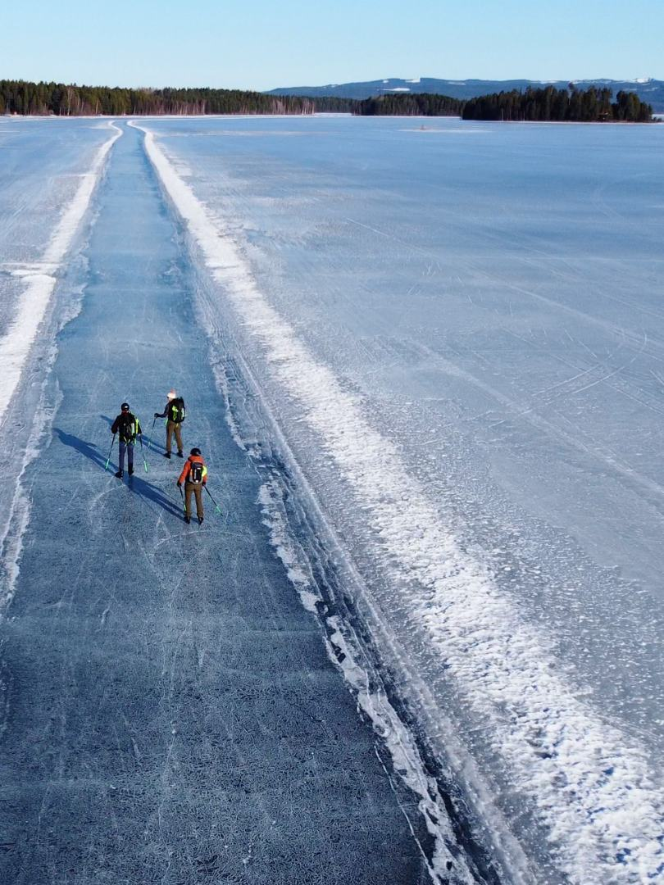

Orsa
Selbstständige Schlittschuhreise auf dem Orsasee, mit einer gefegten Bahn von rund 15 km und Unterkunft in eigenen Hütten direkt am Eis. Termine und Preis folgen in Kürze.
Diese Reise ansehen

Selbstständige Schlittschuhreise auf dem Orsasee, mit einer gefegten Bahn von rund 15 km und Unterkunft in eigenen Hütten direkt am Eis. Termine und Preis folgen in Kürze.
Diese Reise ansehen


Pauschalreise auf historischem Eis, mit den roten Minengebäuden von Falun im Hintergrund. Flug, Mietwagen und Unterkunft sind inbegriffen.
Diese Reise ansehen


Selbstständige Schlittschuhreise ohne Begleitung auf dem Saimaa-See bei Punkaharju, mit eigener Hütte mit Sauna. Ab €895.
Diese Reise ansehen

Selbstständig Schlittschuhlaufen auf einem Bergsee in Kärnten, bekannt von der Alternativen Elfstedentocht. Ab €1.095.
Diese Reise ansehen


Individuelle, selbstständige Schlittschuhreise auf der öffentlichen Natureisroute entlang des gefrorenen Bottnischen Meerbusens. Keine Begleitung und kein festes Programm; Reisedauer und Tagesablauf bestimmst du selbst.
Diese Reise ansehenNatureis lässt sich nicht planen. Die Bedingungen können örtlich unterschiedlich sein und sich im Laufe eines Tages ändern. Du bestimmst dein eigenes Tempo und deine eigene Route.

Joey hat jahrelange Erfahrung auf Natureis und meldet sich persönlich bei dir.
Du läufst standardmäßig ohne Begleitung. Das setzt voraus, dass du selbst einschätzen kannst, ob das Eis sicher ist.
Begleitete Gruppenreisen werden noch geplant.


"Draußen sein, in der Natur - darum geht es mir. Schlittschuhlaufen auf Natureis gibt ein unvergleichliches Gefühl von Freiheit."
Joey läuft schon von Kindesbeinen an Schlittschuh und hat im Laufe der Jahre viel Erfahrung auf Natureis gesammelt. Später absolvierte er eine Ausbildung zum Sportlehrer und sammelte Erfahrung im 11shop der Elfstedenhal, mit Schlittschuhmaterial und Schleifen.
Doch letztlich geht es ihm nicht mehr um Leistung - es geht darum, das Schlittschuhlaufen und die Natur zu erleben. In den Niederlanden wird gutes Natureis immer seltener; in Schweden und Finnland kannst du noch endlos weiterlaufen.
Joey Novak
Gründer von Novakse

Die Rückmeldungen früherer Teilnehmer findest du auf unserer Google-Seite. Wir fügen hier bald einen direkten Link hinzu.
Stell Joey deine FrageDer beste Zeitpunkt ist je nach Ziel und Winter unterschiedlich. In Skandinavien ist es meist länger winterlich als in den Niederlanden, aber Natureis bleibt von Temperatur, Schnee, Wind und den Bedingungen vor Ort abhängig.
Du musst kein Wettkampfläufer sein, aber du solltest selbstständig und kontrolliert Schlittschuh laufen können. Bist du dir über dein Niveau unsicher, denkt Joey vorab mit dir mit.
Natureis erfordert immer eine gute Einschätzung und Vorbereitung. Die Bedingungen können örtlich unterschiedlich sein und sich im Laufe eines Tages ändern. Du läufst selbstständig Schlittschuh; das setzt voraus, dass du selbst einschätzen kannst, ob das Eis sicher ist. Eiskrallen und ein Helm sind Pflicht.
Unsere Schlittschuhtouren hängen immer von den Wetterbedingungen und der Eisqualität ab. Bei Bedarf weichst du auf einen anderen geeigneten See aus oder wählst ein alternatives Programm. Bei Orsa bekommst du dafür vorab Online-Service mit aktuellen Infos über das Eis, allen alternativen Schlittschuhorten und Wetter-Updates.
Ja, abhängig von der Reise und deiner Schlittschuherfahrung. Alle Reisen sind standardmäßig ohne Begleitung auf dem Eis; sie passen zu Läufern, die die aktuellen Bedingungen selbst einschätzen können. Bei Orsa und Falun kannst du Begleitung auf dem Eis dazubuchen. Begleitete Gruppenreisen werden noch geplant.
Du bringst deine eigene Schlittschuhausrüstung, Winterkleidung und Sicherheitsausrüstung mit. Vorab erhältst du eine Packliste und Beratung zu dem, was du brauchst. Für Natureis empfehlen wir Langlaufschlittschuhe; Eiskrallen und ein Helm sind Pflicht.
Du zahlst den gesamten Reisepreis auf einmal bei der Buchung. Stornierst du mehr als 6 Wochen im Voraus, zahlst du 50 % des Reisepreises; danach gilt 100 %.
Fülle das Formular aus, und Joey meldet sich persönlich bei dir.

Technik und Tempo, in kleinen Gruppen oder persönlich begleitet.
Mehr über Schlittschuhkurse
Fachkundig geschliffen und gut eingestellt, von einem ehemaligen Materialspezialisten.
Mehr über Schlittschuhpflege